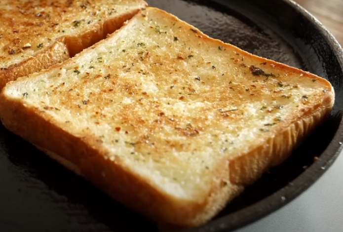

Garlic Bread

Description
Easy garlic bread recipe using honey
Recipe Ingredients
- 4-6 slices of bread, depending on how generously you coat bread
- 30g Butter
- 1 1/2 tablespoon Honey
- 2 tablespoon Mayonnaise
- 1 - 1 1/12 tablespoon minced garlic
- 1 teaspoon parsley
Recipe Instructions
- Soften butter using microwave for ~30 seconds
- Combine softened butter, honey, mayonnaise, garlic and parsley
- Coat bread with mix
- Cook bread on both sides on pan